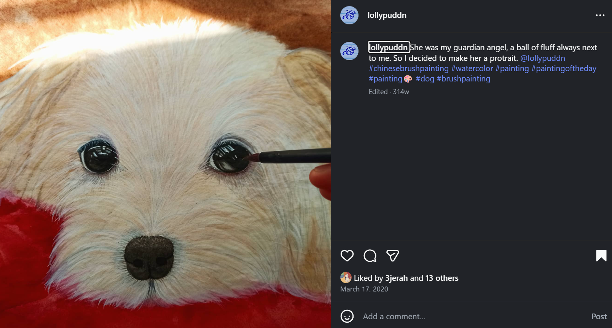
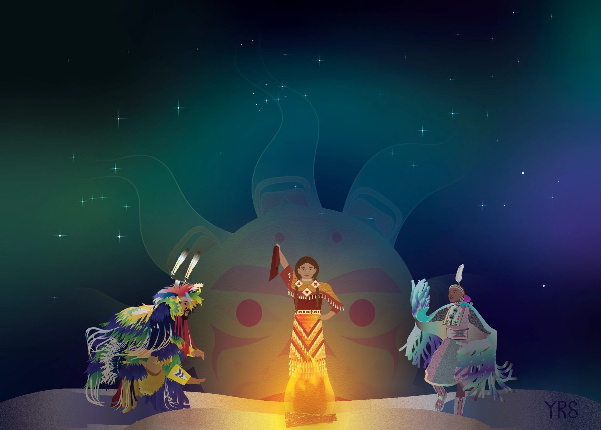
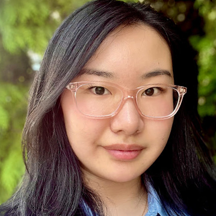
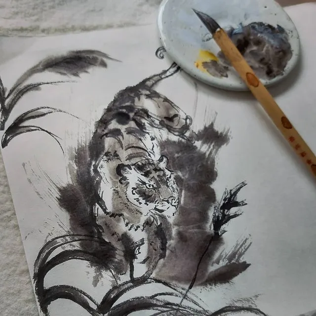
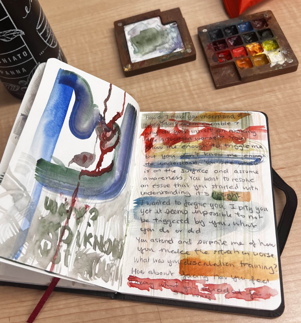
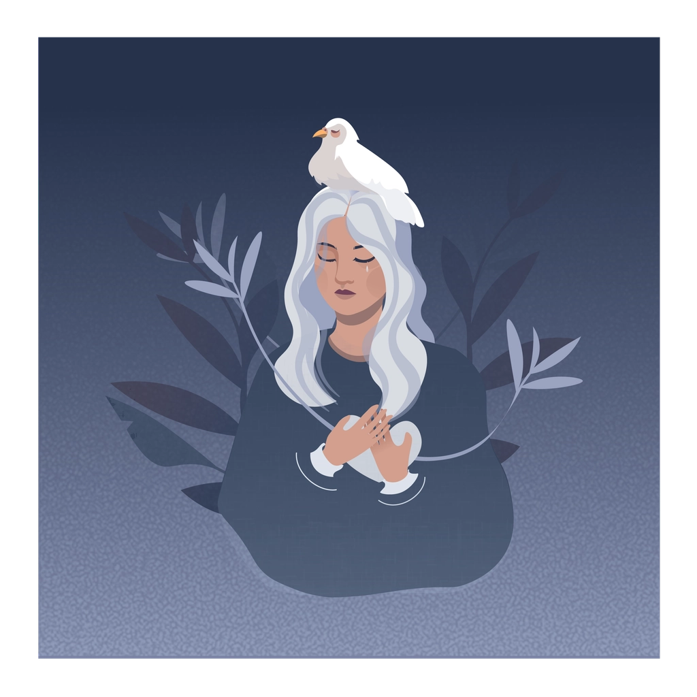
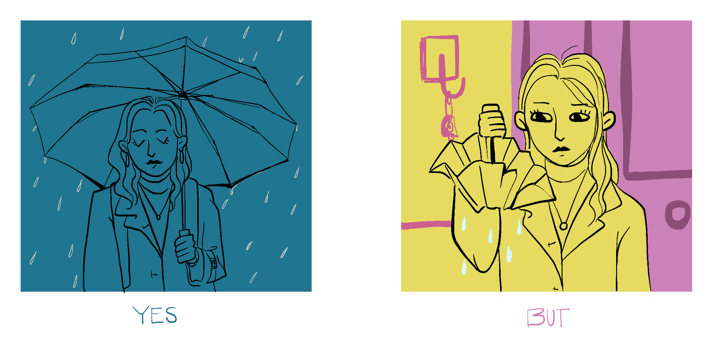

✦ Angela ShenI've spent my whole life making things for people — paintings, interfaces, campaigns, stories. The thread running through all of it is the same: the moment someone feels something because of what you made.
"I perhaps do too many things — but I love everything I have done."— Angela Shen
I've loved making art for as long as I can remember. Growing up, I discovered that it was less about the object itself and more about what happened in the space between the work and the person looking at it.
My favourite thing is the look on someone's face when I show them a sketch or portrait I've made of them — that small, genuine surprise. That flicker of being seen. I chased that feeling for years before I understood what it meant: art is fundamentally a conversation.
I still paint whenever I can. Chinese brush painting especially — the discipline of it, the irreversibility of the mark, and the quiet it requires all give me something that no other medium does.

There's something specific that happens when I'm deep in a painting — a kind of stillness that is both the cause and the product of the work. I make art partly because it gives me peace, and I've noticed that people who receive it often feel something similar.
That feeling — of giving and experiencing calm through making — is something I carry into every other kind of work. Good design should reduce anxiety, not produce it. Good writing should make someone feel less alone with a problem, not more overwhelmed by it.

The further I got into design work, the more I understood that the real impact isn't in the visual — it's in how the system behind it works. A well-designed navigation means a caregiver finds what they need before they give up. A clear UX flow means a survivor in crisis doesn't hit a dead end.
Working at VACFSS taught me this concretely. The decisions I made about information architecture and content hierarchy directly affected how many people inquired about becoming caregivers. Design at that scale isn't decoration — it's infrastructure.
I'm drawn to work where the stakes are real and the audience is underserved — social services, healthcare, education. Places where thoughtful design can shift outcomes.

Running VACFSS's recruitment campaigns — 4M+ results on a $15K budget — taught me that the most effective advertising is the one that feels least like advertising. It's a story someone wants to be part of, not a message being pushed at them.
I studied communications because I was always more interested in why something resonates than in the mechanics of making it. What makes someone stop scrolling? What makes a reader feel seen in a headline? What earns trust before you've even asked for anything?
Those questions sit underneath all my work — in every campaign, every case study, every article I've published.

I have three adopted budgies. They are loud, opinionated, and deeply convinced that whatever I am working on is less interesting than them. They are correct. Caring for animals that needed a home is something I feel strongly about — there's an obvious throughline to the rest of my work.


Open to UX, communications, and design roles — graduating Spring 2026.